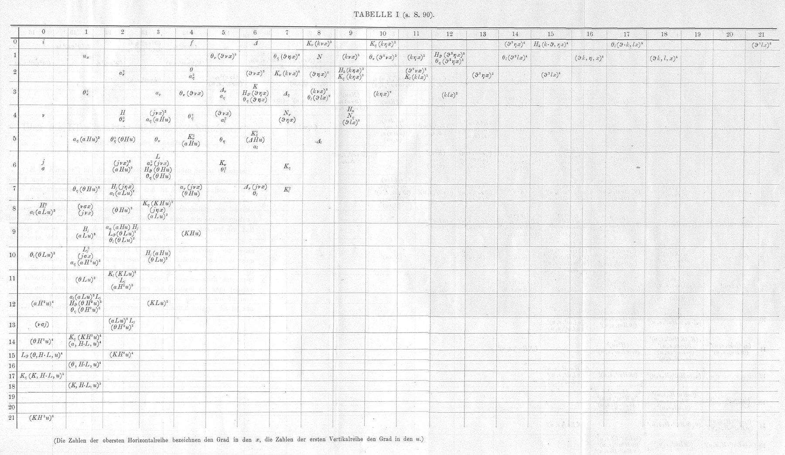
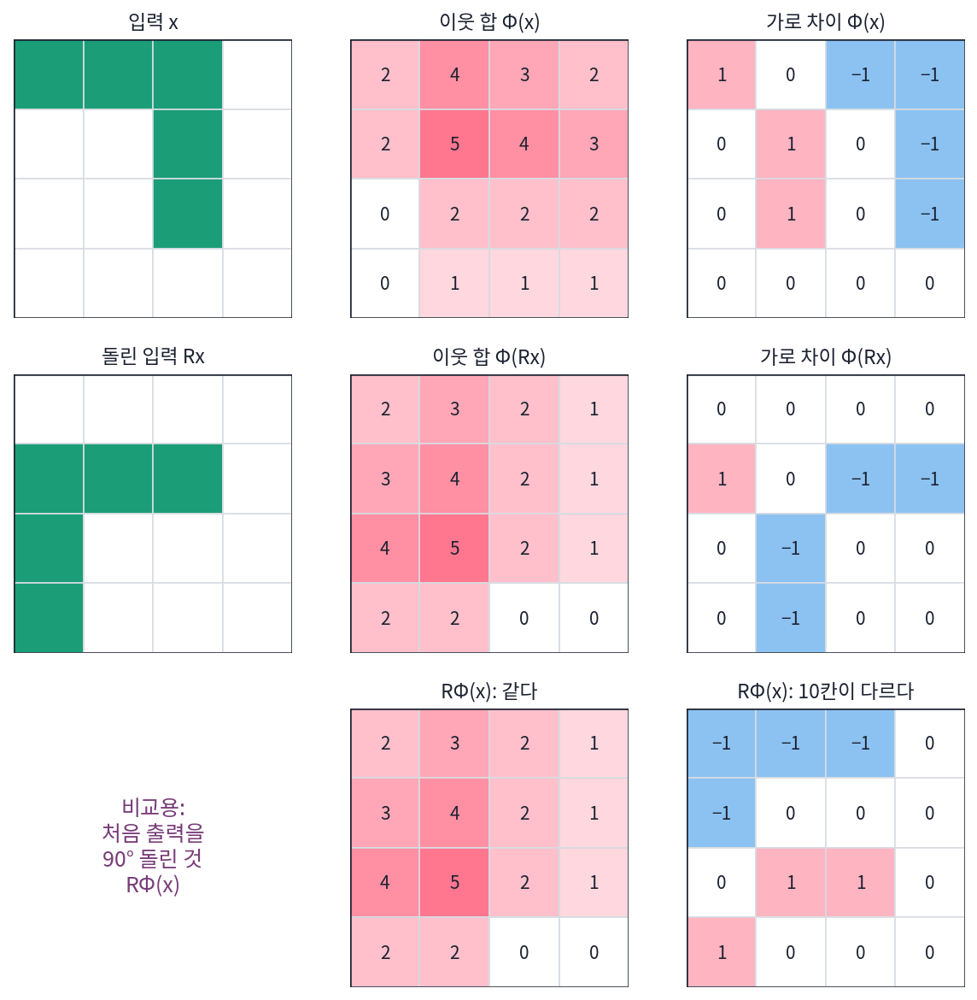
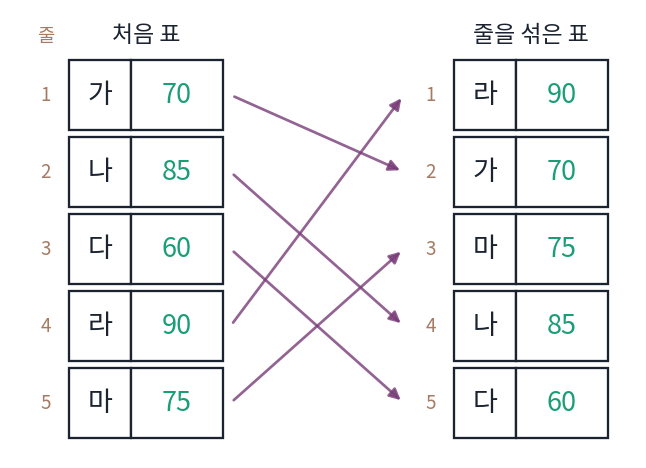
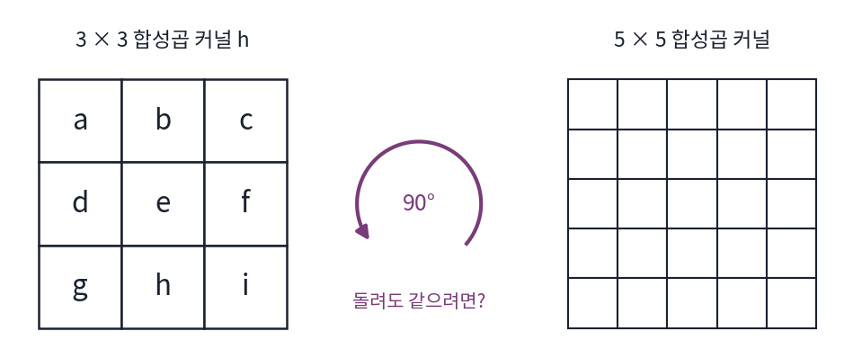
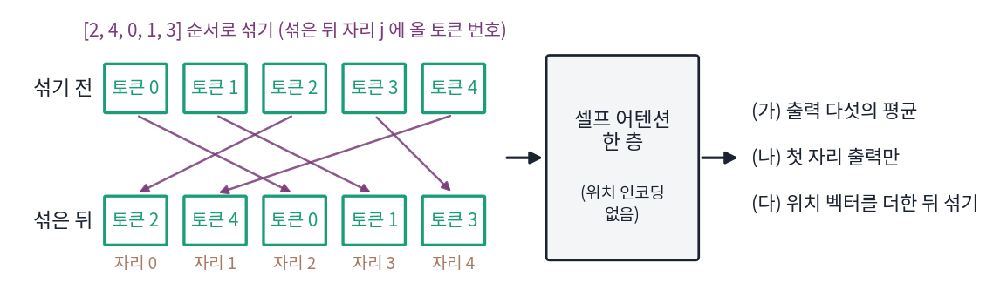

등변: 입력을 돌리면 답도 같이 돈다
그림을 90° 돌려도 고양이는 고양이이므로 분류기의 답은 바뀌지 않아야 한다. 그런데 그림에서 고양이의 테두리를 찾아 표시하는 모델이라면, 그림을 돌렸을 때 표시도 같이 돌아가야 맞고 표시가 그대로이면 오히려 틀린다. 같은 「대칭」이라도 바라는 것이 두 가지다. 입력을 대칭 변환했을 때 출력이 무엇을 해야 하는지를 어떻게 적고, 어떤 계산이 그 요구를 지킬까?
역사: 대칭마다 변하지 않는 양이 하나
「변환해도 그대로인 것」을 찾는 일은 19세기 수학의 큰 줄기였다. 클라인이 기하학을 변환으로 가르던 무렵 대수학에서는 변수를 바꿔도 값이 변하지 않는 식, 이른바 불변식을 찾는 「불변식론」이 한창이었다. 에를랑겐 대학의 고르단(Paul Gordan)이 이 계산을 하나하나 손으로 해내는 방식으로 이름났고, 그 밑에서 1907년 박사 학위를 받은 뇌터(Emmy Noether)의 논문도 어떤 식의 공변식(변수를 바꾸면 정해진 방식으로 같이 바뀌는 식) 331개를 늘어놓은 것이었다.

뇌터는 1918년 논문에서 운동 법칙이 어떤 연속 변환에 대해 그대로이면 그 변환마다 보존되는 양이 하나씩 있음을 보였다(시간을 미는 변환에는 에너지, 공간을 미는 변환에는 운동량, 돌리는 변환에는 각운동량).
이 장에서 따지는 것은 보존량이 아니라 계산이 대칭을 지키는 방식이다. 뇌터의 정리는 「그대로인 것」을 다루었고, 신경망에서는 「같이 움직이는 것」이 더 자주 쓰인다.

공변식 331개를 늘어놓은 게 박사 논문이에요? 지금이면 기호 계산 프로그램에 맡기면 될 것 같은데요.

그 331개를 하나하나 손으로 구하는 것이 고르단의 방식이었어요. 어떤 식이 공변식인지 확인하려면 무엇을 해 봐야 할까요?

일단 변수를 바꾸는 변환을 넣어 보고, 식이 정해진 방식으로 바뀌는지 봐야겠죠. 그런데 변환이 끝없이 많으니까 숫자를 하나씩 넣어서는 안 되고, 변환을 문자로 넣고 전개해야 하겠네요.

문자로 전개하면 항이 금세 불어나요. 그걸 종이 위에서 했어요.

그러면 다 찾았다고 해도, 그 식들이 왜 그대로인지는 계산을 처음부터 따라가 봐야만 알겠네요.

1918년 논문은 출발점이 달랐어요. 식을 늘어놓는 대신, 운동 법칙이 어떤 연속 변환에 대해 그대로라는 대칭에서 시작해 보존량을 끌어냈죠.

보존량은 「그대로인 것」이잖아요. 공변식처럼 「정해진 방식으로 같이 바뀌는 것」은 그림을 다루는 계산에서는 어떻게 적어요?
ㄱ 그림에 두 가지 특징 지도
다시 4 × 4 칸의 ㄱ 그림 x를 써서, 칸마다 숫자 하나를 돌려주는 특징 지도 두 가지를 만든다. 하나는 「나와 이웃 8칸의 합」(3 × 3 합성곱 커널이 모두 1, 바깥은 0으로 채움)이고, 다른 하나는 「오른쪽 칸 − 왼쪽 칸」(가로 차이)이다. 가로 차이는 세로획의 테두리를 찾는 간단한 필터다.
그림을 90° 돌린 Rx에 같은 계산을 하고, 돌린 그림의 특징 지도를 「처음 그림의 특징 지도를 90° 돌린 것」과 비교한다. 이웃 합 지도는 열여섯 칸이 모두 같다. 이웃 8칸은 돌려도 이웃 8칸이고, 합성곱 커널의 아홉 칸이 모두 1이라 돌려도 같은 합성곱 커널이기 때문이다. 가로 차이 지도는 열여섯 칸 가운데 10칸이 다르고, 가장 크게는 2만큼 다르다. 처음 그림에서 「오른쪽 − 왼쪽」이던 차이를 돌려 놓으면 돌린 그림에서는 「위 − 아래」가 되는데, 같은 가로 차이 필터를 쓰면 돌린 그림에서도 여전히 「오른쪽 − 왼쪽」을 재기 때문이다. 실제로 처음 지도를 돌린 것은 돌린 그림에 「위 칸 − 아래 칸」 필터를 쓴 결과와 칸마다 같다.

입력을 변환했을 때 출력도 같은 변환을 받는 성질을 등변 (입력이 움직이면 답도 같이 움직인다 / equivariance)이라 한다. 출력이 아예 변하지 않는 「불변」은 등변의 특별한 경우로, 출력 쪽에서는 변환이 아무 일도 하지 않는 경우다.
불변인 특징도 같은 그림에서 찾을 수 있다. 칠한 칸 수(그림 전체의 합)는 네 방향 모두 5이고, 이웃 합 지도의 가장 큰 값도 네 방향 모두 5다. 다만 그 가장 큰 값이 놓인 자리는 (1, 1) → (2, 1) → (2, 2) → (1, 2)로 그림을 따라 돈다. 등변인 지도를 만든 뒤 전체에서 가장 큰 값만 남기면 자리 정보가 사라져 불변인 숫자가 된다. 가로 차이 지도의 절댓값 합은 7, 5, 7, 5로 바뀌어 불변이 아니듯이, 등변이 아닌 지도에서 뽑은 숫자는 대개 불변도 아니다.
ML에서: 위치를 모르는 어텐션은 순서 바꾸기에 등변이다
토큰 다섯 개(성분 4개)를 위치 인코딩 없이 셀프 어텐션 한 층에 넣고, 같은 토큰을 [2, 4, 0, 1, 3] 순서로 뒤섞어 다시 넣었다. 뒤섞은 입력의 출력은 처음 출력을 같은 순서로 뒤섞은 것과 가장 크게 2.2 × 10−16만큼, 계산 오차만큼만 다르다(s2_equiv.py). 질의와 열쇠의 내적, 소프트맥스, 값의 가중 합 어디에도 「몇 번째 자리」가 들어가지 않으므로, 토큰을 섞으면 출력도 그만큼 섞일 뿐이다. 어텐션은 순서 바꾸기 군에 대해 등변이다. 문장이나 그림 줄처럼 순서가 뜻을 가진 데이터에서는 이 등변성이 오히려 걸림돌이라, 위치 인코딩으로 일부러 깨뜨린다.
문제 4. 섞인 점수표
학생 다섯(가, 나, 다, 라, 마)의 점수가 이 줄 순서로 [70, 85, 60, 90, 75] 다. 표의 줄을 [라, 가, 마, 나, 다] 순서로 섞었다. 아래 다섯 가지 계산은 줄 섞기에 대해 불변인가, 등변인가, 둘 다 아닌가? ① 평균 ② 줄마다 「평균과의 차이」 ③ 줄마다 등수 ④ 첫 줄의 점수 ⑤ 줄마다 「바로 아래 줄보다 높은가」

섞은 표는 [90, 70, 75, 85, 60]이에요. ① 평균은 76으로 그대로니까 불변. ② 평균과의 차이는 처음이 [−6, 9, −16, 14, −1]이고 섞으면 [14, −6, −1, 9, −16]이라 숫자가 바뀌었으니까 불변이 아니에요. 그러면 쓸모없는 계산 아닌가요?
섞은 표의 첫 줄 14는 누구의 차이죠?
라 학생이요. 처음 표에서도 라는 14였어요. 숫자는 학생을 따라 자리만 옮겼네요. 그러니까 ②는 등변이에요. ③ 등수도 학생을 따라가니까 등변이고요.
④ 첫 줄 점수는 70에서 90으로 바뀌었는데, 이건 학생을 따라간 게 아니라 「첫 줄」이라는 자리를 본 거야. 불변도 등변도 아니야. ⑤도 처음엔 [아니오, 예, 아니오, 예]였는데 섞으면 [예, 아니오, 아니오, 예]야. 바로 아래 줄이 누구냐는 줄 순서가 정하니까 학생을 따라가지 않아.
그래요. 불변이나 등변인 계산은 「누가 어느 줄에 있나」를 쓰지 않아요. 줄 순서를 쓰는 순간 둘 다 깨져요.

조교님이 출석부 순서를 바꿔도 제 학점은 그대로여야 하고, 제 학점은 제 이름 옆에 따라와야 하는 거네요.
문제 5. 돌리기에 등변인 3 × 3 합성곱 커널
이웃 합 지도는 90° 돌리기에 등변이었고 가로 차이 지도는 아니었다. (가) 아무 3 × 3 합성곱 커널 h 에 대해, 돌린 그림에 h 를 쓴 결과는 처음 그림에 어떤 합성곱 커널을 쓴 결과를 돌린 것과 같은가? (나) 90° 돌리기에 등변이려면 합성곱 커널이 어떤 꼴이어야 하고, 자유롭게 정할 수 있는 숫자는 몇 개인가? (다) 5 × 5 합성곱 커널이면 몇 개인가? 좌우 뒤집기에도 등변이게 하려면? (위젯 2에서 합성곱 커널을 「직접 만들기」로 바꿔 확인해 보자.)

(나)부터 할게요. 이웃 합이 등변이었으니까 아홉 칸이 다 같으면 돼요. 자유로운 숫자는 하나요.
가운데만 2이고 가장자리 넷이 0.5, 모서리 넷이 0.1인 합성곱 커널이면요? 위젯에서 넣어 봐요.

등변 오차가 0이에요. 다 같을 필요는 없네요. 그런데 모서리 하나만 0.3으로 바꾸면 오차가 0.2가 돼요.
(가)를 먼저 보면 이유가 보일 것 같아. 돌린 그림에 h를 쓰는 건… 그림 대신 h를 거꾸로 90° 돌려서 처음 그림에 쓰고, 결과를 돌린 것과 같지 않을까?
그렇다면 등변이려면 h에 무슨 조건이 필요하죠?

h를 90° 돌려도 칸마다 값이 같아야 해요.

3 × 3을 90° 돌리면 칸이 어떻게 움직이는데?
가운데는 제자리, 가장자리 넷이 서로, 모서리 넷이 서로 자리를 바꿔. 칸 묶음이 셋이니까 묶음마다 숫자 하나씩, 3개야.
(다)는요?
5 × 5는 25칸이 가운데 하나와 넷씩 묶인 여섯 묶음이라 돌리기만이면 7개예요.
뒤집기까지 넣으면 묶음이 어떻게 되죠?
대각선에서 벗어난 칸 여덟이 한 묶음으로 합쳐지는 곳이 생겨서 6개요. 3 × 3은 뒤집기를 넣어도 3개에서 줄지 않고요. 자유로운 숫자가 25개에서 6개로 줄어요.

대칭 행렬이 n² 개가 아니라 n(n + 1)/2 개 숫자로 정해지는 것과 같은 이치야. 대칭을 요구하면 자유가 줄어.
문제 6. 섞인 토큰을 읽는 세 가지 방법
위치 인코딩 없는 셀프 어텐션 한 층의 출력에서 답을 읽는다. 토큰 다섯을 [2, 4, 0, 1, 3] 순서로 섞어 넣었을 때, 섞기 전과 비교해 (가) 출력 다섯 개의 평균은 얼마나 바뀌는가? (나) 첫 번째 자리의 출력만 읽으면 얼마나 바뀌는가? (다) 입력에 사인 위치 벡터를 더한 뒤 섞으면 출력은 여전히 「섞인 것」일 뿐인가?

어텐션이 순서 바꾸기에 등변이라고 했으니까 어떻게 읽든 다 똑같겠죠. (나)도 0이요.
등변이라는 건 출력이 무엇을 한다는 뜻이었죠?
같이 섞인다는 거요. 아, 그러면 섞은 뒤 첫 번째 자리에는 원래 2번 토큰의 출력이 와요. 첫 자리만 읽으면 다른 토큰의 출력을 읽는 거라 가장 크게 1.744 달라요. (가) 평균은 5.6 × 10−17만큼, 계산 오차만큼만 바뀌고요.
평균은 문제 4의 ① 같은 거야. 등변인 출력을 섞임과 상관없이 모으면 불변이 돼.
(다)는요? 위치 벡터는 토큰을 따라 섞이나요?
아니요, 자리마다 고정이니까 토큰을 섞어도 위치 벡터는 안 섞여요. 그럼 등변이 깨지겠네요.
계산해 보면 섞은 입력의 출력과 섞은 출력이 가장 크게 4.623 달라.
그래요. 집합을 분류할 때는 평균처럼 불변인 읽기를 쓰고, 문장처럼 순서가 중요할 때는 위치 벡터로 등변을 일부러 깨요. 첫 자리 출력을 읽는 모델은 첫 자리에 특별한 토큰을 늘 놓아서 「첫 자리」가 뜻을 갖게 하고요.

조별 발표에서 「발표 순서 1번이 대표」라고 정해 두면 순서를 바꿀 때 대표가 바뀌듯이, 첫 자리 출력만 읽으면 섞을 때마다 읽는 토큰이 바뀌네요.